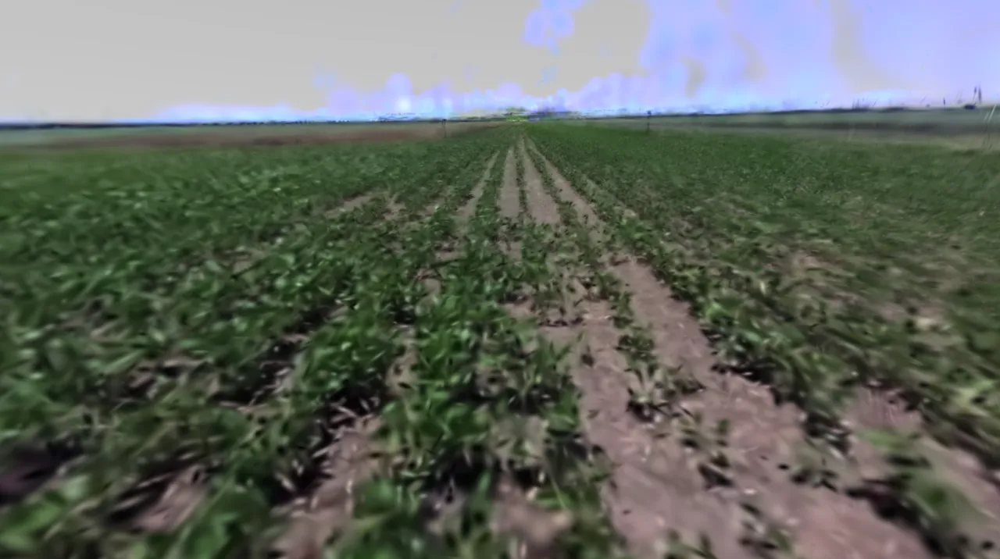

Data credits and licences
Whose data, under which terms.
Our results stand on public datasets made by other people. This page credits them, says what we publish from each, and lists the software this site uses.
Behind this text Soybean field (rosario_04), rendered from the map. Source images: The Rosario Dataset, CIFASIS-CONICET, CC BY 4.0.
Maps on this site
The 3-D maps are published under CC BY 4.0. We publish maps only from data we may share.
The map files are hosted on Hugging Face (Pyassahu/xclean-maps), except the landing page's four ride cuts, which this site serves itself (data/cuts/): each is a subset of one map's splats, the ones a visitor can see from xclean's camera path, with xclean's camera track for that stretch. They are cut from the maps oak_161834, oak_161206 and oak_164424 (our recordings) and rosario_01 (the Rosario Dataset), under the same licence and credit as their maps.
The Rosario Dataset
CIFASIS-CONICET, Argentina. robot.cifasis-conicet.gov.ar. Licence: CC BY 4.0.
Pire, T., Mujica, M., Civera, J. and Kofman, E. "The Rosario dataset: Multisensor data for localization and mapping in agricultural environments." The International Journal of Robotics Research, 2019.
Credit on every Rosario map: "Source images: The Rosario Dataset, CIFASIS-CONICET, CC BY 4.0 (Pire et al., IJRR 2019). Changes: 3-D Gaussian-splat map reconstructed by Necessity Robotics (xclean) from the images and xclean's own live camera poses." The dataset's authors do not endorse our maps.
The landing page's Rosario ride plays a cut of the rosario_01 map that this site serves (data/cuts/rosario_01.spz, with xclean's camera track for it): a subset of that map's splats, under the same licence, shown with the same credit.

Our OAK-D-Lite recordings
Recorded by Necessity Robotics with its own OAK-D-Lite camera (five routes, all mapped here). Maps released under CC BY 4.0: "3-D map by Necessity Robotics (xclean)."

Benchmark datasets (numbers only)
We report our accuracy numbers on these datasets. Except for Rosario (CC BY 4.0, above), we publish no images, maps or films made from them.
| Dataset | Reference | Licence |
|---|---|---|
| EuRoC MAV | Burri, M. et al. "The EuRoC micro aerial vehicle datasets." IJRR, 2016. ETH Zurich. | In Copyright – Non-Commercial Use Permitted (ETH Research Collection, checked 2026-10-30) |
| KITTI odometry | Geiger, A., Lenz, P., Stiller, C. and Urtasun, R. "Vision meets robotics: The KITTI dataset." IJRR, 2013. | CC BY-NC-SA 3.0 (non-commercial) |
| 4Seasons | Wenzel, P. et al. "4Seasons: A cross-season dataset for multi-weather SLAM in autonomous driving." GCPR, 2020. | CC BY-NC-SA 4.0 (non-commercial) |
| MADMAX | Meyer, L. et al. "The MADMAX data set for visual-inertial rover navigation on Mars." Journal of Field Robotics, 2021. DLR. | No licence named by its authors. |
| Rosario | Pire, T. et al., IJRR 2019 (above). | CC BY 4.0 |
| Rosario v2 | CIFASIS-CONICET (one route on the board). | See the dataset's official page. |
Inside the xclean package
TartanAir (place-recognition vocabulary)
xclean's ORB vocabulary was built from 1,318 TartanAir images; the file holds only cluster centres, no image data.
Wang, W. et al. "TartanAir: A dataset to push the limits of visual SLAM." IROS, 2020. Carnegie Mellon University, AirLab. theairlab.org/tartanair-dataset. Licence: CC BY 4.0. Its authors do not endorse xclean.
xclean's runtime dependencies (NumPy, SciPy, Numba, CuPy, OpenCV, depthai, the NVIDIA CUDA libraries and others) are installed separately and keep their own licences; THIRD_PARTY.md in the repository lists each one.
Baseline systems
We ran these systems separately to compare against. None of their code is part of xclean.
- ORB-SLAM3 V1.0 (UZ-SLAMLab/ORB_SLAM3, commit 4452a3c, 2022-02-10), built on Windows with portability-only patches (headless, MSVC); tracking, mapping, loop-closing and optimiser code unmodified: Campos, C. et al. "ORB-SLAM3: An accurate open-source library for visual, visual-inertial and multi-map SLAM." IEEE T-RO, 2021. GPLv3.
- OKVIS2-X (ethz-mrl/OKVIS2-X, commit 38043e4, 2026-03-17), built on Windows with Windows-port patches; per our build notes, no patch changes its estimator, front end or dataset logic: Boche, S. et al. "OKVIS2-X: Open Keyframe-based Visual-Inertial SLAM Configurable with Dense Depth or LiDAR, and GNSS." Accepted to IEEE T-RO (arXiv:2510.04612, 2025). BSD-3-Clause.
Software on this site
| Library | Version | Licence | Used for |
|---|---|---|---|
| three.js | 0.186.1 | MIT, © 2010-2026 three.js authors | 3-D rendering |
| Spark (@sparkjsdev/spark) | 2.3.1 | MIT, © 2025 World Labs Technologies, Inc. | Gaussian-splat rendering |
| fflate (bundled in Spark) | 0.8 | MIT, © Arjun Barrett | decompression |
The libraries are served from this site, unmodified, with their licence files in vendor/. Text uses your device's system fonts; no font is downloaded. The map files are hosted on Hugging Face, apart from the landing page's ride cuts (above).
Privacy
This site sets no cookies, runs no analytics and loads no third-party trackers. Your browser contacts two hosts: this site (necessityrobotics.github.io, served by GitHub Pages) and Hugging Face (huggingface.co, and its download servers under hf.co), where the map files are hosted. Each sees the usual request data, such as your IP address, under its own privacy policy. The landing page's ride cuts and their camera tracks come from this site. The other map files (the 3-D renders, films and point clouds) are fetched from Hugging Face: by the landing page once it is idle and as you scroll through its maps, by the maps page when you play a film or rest the pointer on a map's picture, and by the 3-D viewer when you open a map. Map files you have downloaded are kept in your browser's own cache on your device, so a map you have seen recently is usually not downloaded again (nothing is kept with Save-Data on); nothing is sent anywhere. "Tilt to look" (phones, off until you tap it) reads your device's motion sensor inside the page only; nothing is sent.